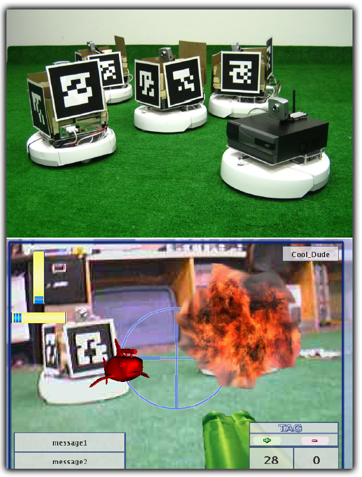

|
Towards accessible teaching of robots from demonstration, we illustrate a prototype mixed-reality distributed multi-player robotic gaming environment. Robot control by a human operator (or teleoperation) is cast in a video game style interface to leverage the ubiquity and popularity of games while minimizing tedium commonly associated with robot training. Our goal was to provide robot learning researchers with a means to collect large corpora of data representative of human decision making. |